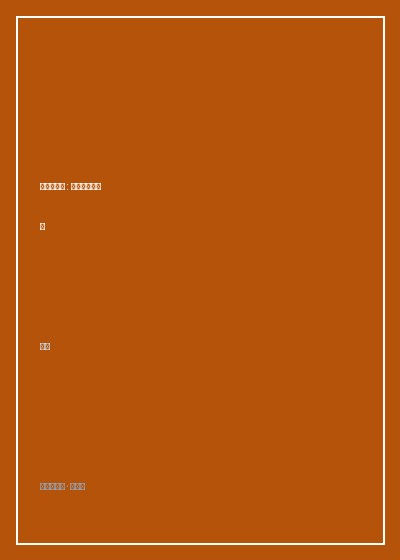

《贫穷的质感》

总体观点
《贫穷的质感》是一部具有乔治·奥威尔《通往威根码头之路》传统的当代平民田野巨作。作者王梆作为第一代华裔移民，旅居英国十二年，从伦敦地下室到英格兰北部衰落的后工业小镇，深入食物银行、慈善二手店、廉租公屋（Council Estate）与社区老年活动中心。她打破了国内公知对‘英伦贵族庄园、优雅下午茶’的虚浮浪漫滤镜，以极其写实的毛孔级白描，触摸到了新自由主义紧缩政策（Austerity）洗劫下普通英国工薪阶层的‘贫穷的真实质感’。
‘贫穷不是一种数字，而是一种全方位的生理感受与生活纹理’。在王梆笔下，贫困是冬天为了省钱不敢开暖气、呼出白气被冻裂的红肿双手；是在食物银行（Food Bank）排队领取临期两天的罐头豆子与硬面包时，普通退休老人羞愧躲闪的眼神；是公立国民医疗服务（NHS）体系在预算削减下坍塌、看一颗牙排队要等两年的肉体折磨。老牌资本主义福利国家的制度退潮，将数百万原本体面的中产边缘人群推入了‘燃料贫困与食物贫困’的寒冬。
在冷酷的体制退潮与脱欧撕裂阴影之下，民间社会展现出了令人动容的互助韧性与平民道德光芒。全英数十万名普通老百姓自发担任义工，教会、工会与社区慈善厨房构筑起一张接纳落难同胞的‘民间安全网’。作者以一种平视、深情而充满批判反思的人道主义目光，记录下普通人在废墟中顽强修剪玫瑰、守卫社区图书馆、在廉价二手衣服中搭配出体面尊严的平民生命力，为后现代社会的贫富撕裂留下了宝贵的历史证词。
核心观点
-
1. 食物银行与体面的尊严保卫战
全英数千家食物银行不是施舍乞丐的粥棚，而是千千万万在职护士、快递员与退休教师维持温饱的生命线。由于电费暴涨，许多人不得不特意挑选‘不需要开火加热的冷食罐头’，在饥饿与维持体面尊严之间如履薄冰地走钢丝。
王梆在食物银行当义工的亲历：一位衣着得体、佩戴珍珠项链的八十岁退休老太太，颤抖着领走一袋燕麦片和牛奶，反复向义工鞠躬道歉‘打扰了你们，下个月我领了养老金一定捐回来’，令人心碎。 -
2. 燃料贫困：在‘挨冻还是挨饿’之间残酷二选一
在英国北部的漫长寒冬，高昂的天然气账单逼迫数百万低收入家庭陷入著名的‘Heat or Eat（取暖还是吃饭）’两难抉择。老人为了省电终日裹着三层旧毛毯坐在不开灯的昏暗客厅，许多独居老人在寒冬中因体温过低悄然死于家中。
描写小镇邻居老夫妇的日常生活：两人每天只在傍晚开半小时电热毯把被窝捂热，随后迅速关电钻入被窝，白天则结伴去镇立图书馆或公共巴士上‘蹭暖气’度过一整天。 -
3. NHS神话褪色与排队两年的牙科地狱
全民免费医疗体系曾是英国战后最骄傲的制度丰碑。然而在保守党长达十年的紧缩削减下，公立医院急诊室人满为患、救护车平均等待时间长达数小时，公立牙医全面停挂新号，逼得低收入平民不得不买来工业钳子‘在家自己拔牙’。
调查小镇上的平民自救互助群：工人们在论坛交流如何用网上买来的简易补牙树脂自己对着镜子填塞龋齿黑洞，生动折射了公共医疗私有化浪潮下的平民苦难。 -
4. 二手慈善店（Charity Shop）的循环经济美学
遍布英国大街小巷的Oxfam、英国心脏基金会二手慈善店，构成了英国平民社会最独特的文化景观。这里的货品全部来自邻里无偿捐赠，一镑钱一本的企鹅经典旧书、五镑一件的羊绒大衣，平民在这里用极其微薄的成本构筑起优雅整洁的精神生活。
作者分享自己在慈善店寻宝的喜悦：淘到一本1930年代初版的弗吉尼亚·伍尔夫小说，封底留着前人清秀的铅笔题字，展现了物质贫乏时代平民对精神高贵的不屈坚守。 -
5. 保卫社区图书馆与平民公共空间的韧性
当地方政府为了削减财政预算宣布关闭小镇图书馆时，全体居民自发组织起来抗议静坐，退休工程师与家庭主妇自愿排班接管图书馆日常借阅与暖气维护。公共图书馆不仅是借书之所，更是流浪者、贫困儿童唯一的免费网络与避寒天堂。
记录小镇保卫图书馆集会：七十岁的老工人站在石阶上高呼‘他们夺走了我们的煤矿、夺走了我们的工厂，现在休想再夺走穷人孩子唯一的知识之门！’展现英国工人阶级深沉的历史尊严。
全书结构
-
第一章 贫穷的质感：食物银行与后工业小镇日常
从作者搬迁至英国乡村小镇的所见所闻切入，深入食物银行内部实地义工见闻，触碰普通人在紧缩时代的温饱挣扎与生活肌理。
细致盘点食物银行标准食品包：三盒烘豆罐头、两包长粒米、一盒红茶包与一块肥皂，展现维持现代人生存所需的绝对最低生理底线。 -
第二章 廉租房、公屋制度与居住正义的坍塌
追溯英国战后工党建设百万廉租公屋的辉煌历史，剖析撒切尔夫人推行公屋私有化政策后，如何一步步将年轻一代推入投机性高房租地狱。
走访格伦费尔大楼火灾后的幸存者安置区，分析廉价易燃外墙保温材料背后政府监管缺位与阶级冷漠造成的惨绝人寰惨案。 -
第三章 NHS的黄昏：在紧缩与私有化夹缝中呻吟
直击英国国民医疗服务体系在财政紧缩下的系统性危机，记录医护人员大罢工、急诊走廊病床滞留与公立牙科诊疗体系的全线崩溃。
真实记录一位老矿工在因突发心梗拨打999后救护车延误五个小时才赶到现场的悲凉录音，反思福利神话在现实财政挤压下的破灭。 -
第四章 慈善二手店与平民生活的微光
深入遍布英国市镇的Charity Shop文化，探讨循环经济、志愿服务精神与平民阶层如何在消费主义垃圾中打捞温情与精神尊严。
描写一位在二手店当了二十年志愿收银员的八旬老太太，如何用微笑给每一个羞怯的穷人找零，将冰冷的商业小镇变成熟人温情社区。 -
第五章 英国老人的孤独死与社区看护的挽歌
聚焦老龄化社会的照护危机，记录公立养老院资金链断裂、私立护理机构护工低薪过劳，探讨无声无息死在家中的独居老人困境。
深入一个由邻里志愿发起‘每周敲门五分钟’互助网络，展示平民社会如何用微小自组织抵御现代大都市原子化冰冷隔绝。 -
第六章 终局与反思：在风暴中重新发现社会
总结全书，结合脱欧阴霾与阶层断裂，呼唤超越资本逻辑的人性回归，向那些在严酷现实中守望相助的普通英国平民致敬。
王梆在冬日落叶铺满的墓园散步，凝视着无名平民墓碑前盛开的红色三色堇，为这部浸透泪水与尊严的平民纪实画上深沉句号。